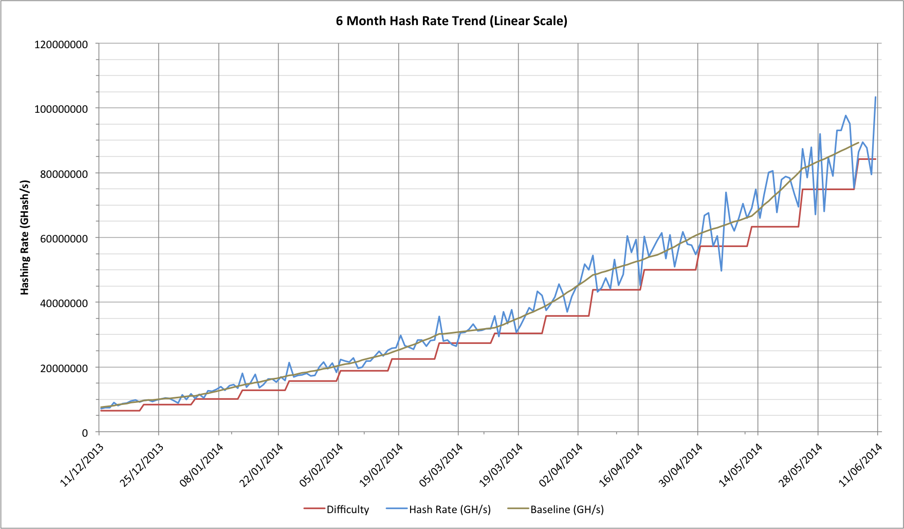
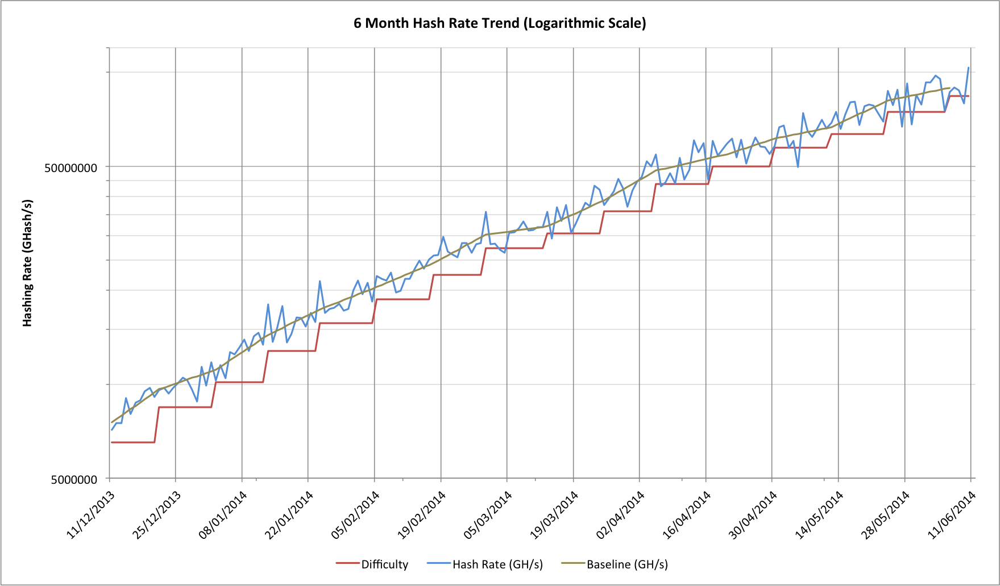
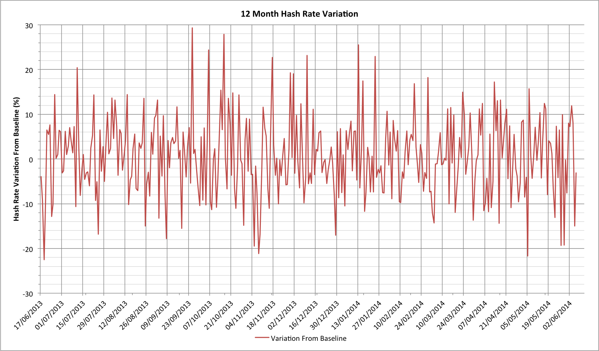
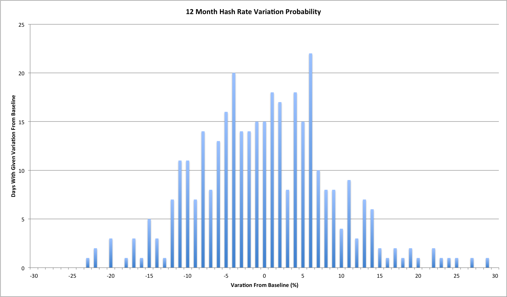

Dave Hudsonhashingit.com |
Bitcoin difficulty and hash rate statistics should be considered an illness. The symptoms include anxiety, depression, sleeplessness and paranoia. Bitcoin miners follow their every movement, rejoicing at smaller-than-expected difficulty changes and collectively dismaying when things go the other way. Authoritative-looking charts have people puzzling about why things are so erratic and chasing non-existent mining conspiracies. The truth is out there...
When we start to think about mining, difficulty charts are not far away. Most of them are presented something like this:

This chart shows the last 6 months of daily hash rates and the rising difficulty. It also shows a baseline trend line but we’ll look at that a little later.
Aside from that inexorable increase in difficulty and the cries of woe from miners watching it, the most striking characteristic is that way it’s getting progressively much more "spiky"! Look at how smooth it used to look? In fact this assessment is actually just plain wrong; if you were to look at 6 months of data starting 3 months earlier then that nice "smooth" part would end up looking just as bad as the most recent data. The problem is a question of scale; the variations in the hash rate become numerically larger as the overall hash rate increases.
When confronted with this sort of data, many statisticians switch to logarithmic graphs instead of linear ones because log charts show the magnitude differences rather than absolute differences. Here’s the same data on a log chart:

Notice how the spikes in the blue hash rate look pretty much the same all the way across now? If you’re observant you might argue that the ones on the left are slightly less spiky, but that’s because the slope of the graph is steeper there. Even there though it’s clear that the statistical noise on a day-to-day basis is actually much larger than the overall trend. That overall trend shows that hashing rate, and thus the difficulty, increases are slowing down for now (and probably for the foreseeable future). The slowdown wasn’t evident on the linear scale graph and so we can see another advantage of logarithmic scale graphs.
Most Bitcoin miners tend to think in terms of "difficulty" because it’s what determines the complexity of any mining. On both of the graphs we’ve just looked at, though, the difficulty is clearly lagging behind the hash rate. The problem is that it’s set retrospectively, and set at a level that would make the preceding 2016 blocks take exactly 14 days to find. This means that the difficulty lags around 5.5 to 7 days behind the actual hash rate even when it’s changed. If we want a real baseline to think about hash rates we need something more up-to-date.
In both of the charts we’ve just seen there is a baseline trace, and that trace represents "something more up-to-date". The baseline is calculated by looking at the days where the difficulty changes and taking the square root of the ratio of a new to previous difficulty level and then multiplying it by the new difficulty. In-between these fixed points is an interpolation that assumes a steady percentage growth rate between them.
This particular baseline isn’t perfect because it has no way to account for statistical noise in the hashing rate (see "Hash rate headaches") but it turns out to be a surprisingly effective estimate nonetheless.
Visually our baseline looks pretty reasonable. We know that even if the hash rate was constant the difficulty would change as a result of random noise (see "Reach for the ear defenders"). The question is what does our noise profile look like if we subtract out the baseline hash rate estimate? This should approximately follow Bitcoin’s Poisson process’ noise profile and should oscillate about zero. Here’s what it actually looks like for the last 12 months:

Comparing this with what simulations suggest for 24 hour variations this looks remarkably consistent. This pretty-much suggests that there’s been very little if anything unusual happening over the last 12 months and that hashing capacity has been reasonably steadily added throughout. One final check though is to look at the probability histogram for the variations about our baseline:

While it’s not perfect, it has just the sort of probability distribution we would expect to see.
We started out trying to understand how key statistics were presented. We’ve seen how linear charts can be highly misleading. By devising a way to estimate the hash rate baseline, we’ve been able to go one step further and see just how much the day to day hash rate estimates will oscillate quite wildly. We can now be confident that even 20% swings from the estimate are surprisingly likely, and that day-to-day swings can be even larger!
The gods of statistics didn’t want us to worry about what happens in the course of hour or even a few days; those numbers, tantalizing as they may seem, are largely meaningless. They are the lies among the truth that only becomes apparent over a much longer timescale.
[Data reference: blockchain.info]